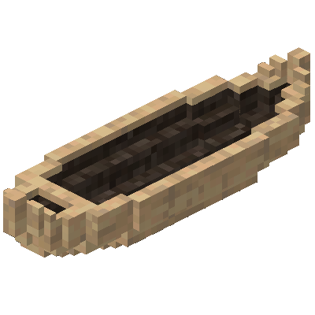

Долбленые каноэ
Долбленые каноэ
Долбленое каноэ, вероятно, будет вашим первым шагом к водным путешествиям! Если вы находитесь в медном веке, то вы, скорее всего, сможете построить каноэ.
Вы можете поставить блоки или животных на место пилота, но учтите, что у вас не будет возможности грести! Это очень полезно, когда вы просто хотите спустить материалы вниз по реке самостоятельно.
Каноэ имеет два места и управляется с заднего сиденья. Для достижения полной скорости вам необходимо держать весло для каноэ, а если два игрока будут держать весла, то вы будете двигаться еще быстрее.
Для постройки долбленого каноэ вам нужно разместить 3 обтесанных бревна в горизонтальный ряд, срезать верхушки бревен пилой, затем выдолбить форму каноэ топором и, наконец, поджечь внутреннюю часть каноэ, чтобы выжечь корпус. Процесс займет столько же времени, сколько и обжиг в земляной печи.
Для вырезания долбленого каноэ подходит только мягкая древесина, и как следует, подходят только бревна:
Дугласовой пихты
Сосны
Пальмы
Ели
Секвойи
Сейбы
Мангрового дерева
Белого кедра
Ивы
Просто бревно
Структура
Первый шаг создания долбленого каноэ.
Странные плиты
Структура
Верхняя часть бревна удалена пилой.
Странная скульптура
Структура
Полностью вырезанное долбленое каноэ, готовое к выжиганию корпуса.
Не забудьте создать одно или два весла!